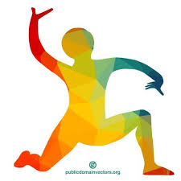

<!DOCTYPE html>
<html lang="no">
    <head> 
        <title> naturfag prosject </title>
        <meta charset="utf8">
        <link rel="stylesheet" href="css/style.css">
    </head>
</html>
<body> 

   
<div id="container-parent"> 
        
    <div id="navbar">

        <div class="nav-item"> GOD HELSE</div>

        <div class="nav-item">
            <a href="html/god_helse.html"> Hva er god helse? </a>
        </div>

        <div class="nav-item">
            <a href="html/hvordan_god_helse.html"> hvordan opnå god helse </a>
        </div>

      

    </div>
    

    <div id="midd">
        <div id="left"> </div>
        
           <div id="header_text">
            <h1> velkommen til oss</h1>
            fysisk, psykisk og sosialt velvære er viktig for å ha en god helse. Fysisk helse er kanskje det som preger deg mest i hverdagen så derfor er det det vi skal sette søkelys på. Der etter har vi psykisk helse for å holde humøret oppe og stabilt. Sosialt velvære er viktig for både å føle lykke og å være stimulert. 
            <p>her hos oss ønsker vi at du der hjemme skal lære noe om hvordan akkurat du kan forbedre helsen din. </p> 
           </div>
           
           <div id="header_pic">
            
           </div>
      
        <div id="right"> </div>
    </div>


        
    <div id="flex-container">
        <h1> God Helse= Godt Humør </h1>
        <p>Vi ønsker å gi deg den hjelpen du trenger for å oppnå ditt fulle potensial! under står det litt om hvordan trening og ett godt kosthold kan påvirke deg. les mer i "god helse" og "hvordan oppnå god helse"!</p>
        
        <div id="box">
            <div id="kosthold">
                <h1>kosthold:</h1>
                <p> Ett godt og variert kosthold gjør at kroppen kan gjøre det den skal. Ved å få de næringsstoffene den trenger kan kroppen sette søkelys på å gjøre om mat til energi og å bekjempe sykdommer. Hvis du har ett dårlig kosthold, kan man bli lettere syk. For å spise godt må man få i seg tre måltider om dagen, samt 5 mellommåltider som frukt og bær.

                    I tillegg til å spise variert burde en prøve å spise «sundt», frukt og grønt, kjøtt og vann er ett bra utgangspunkt til ett vert måltid (frokost, lunsj og middag). Maten du får i deg er viktig for både den mentale og fysiske helsen.
                    </p>
                </div>
            <div id="trening">
                <h1>trening:</h1>
                <p> Å trene litt hver andre dag vill gjøre underverk på helsen din. Forskning viser at å trene gir samme virkning på humøret som latter. Ved å trene kjerne muskulatur (som er det viktigste) kan generelle smerter i rygg og nakke bli minsket betydelig. Man får også beder utholdenhet og plages mindre av utmattelse.

                    Sammen med å trene kjerne muskulatur er det viktig å tøye ut. Ved å strekke på muskler kan man føle seg mykere og mer tøyelig. Du kan få lettere med å bevege deg og føles mindre stiv. Dette vill påvirke både den fysiske og mentale helsen
                    </p>
                </div>
        </div>
    </div>

    <div id="footer-child">
          <p>
            kontakt oss:
          </p>  
          <ul>
            <li> tel: 90595023</li>
            <li> mail: clarahu@viken.no</li>
          </ul>
    </div>
</div>
    
</body>